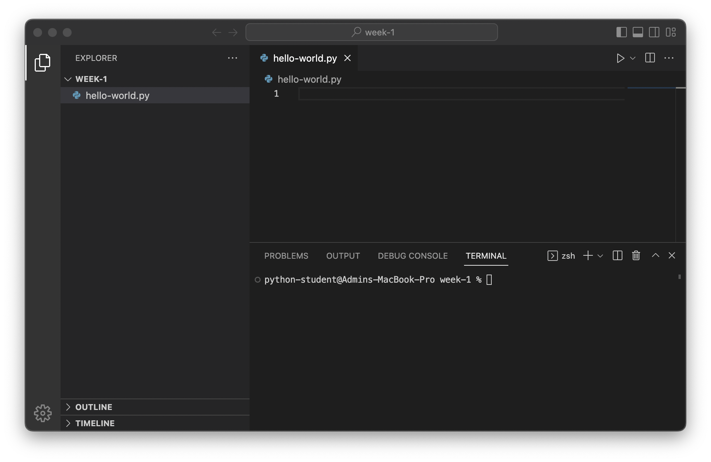

Lecture Notes#
Warm up#
Circle up and introduce names + some fun fact
Name point & swap game
Important
TIMECHECK: 10 minutes
Introduction (5min)#
Instructor introduction
Course overview
Discuss thinking about the terminal as an "interface" ?
Colors
Emojis
Important
⏰ 15 minutes
Introduction to Python#
VSCode#
VSCode is a popular choice of integrated development environment (IDE) for developing Python.

The interface has 3 main regions:

The file explorer (purple)
Shows a tree view of the current folder
Selecting a file here will open it in the editor
Can be opened/closed by pressing either button circled in purple
The editor (green)
Where we interact with files and write code
Console area (orange)
Has 4 different tabs but we will only use the "Terminal" (red)
Can be opened/closed by clicking the top right button circled in orange
Other elements of the interface:
The arrows in the top bar (<- ->) navigate back / forward through editors
The gear (⚙️) in the bottom left corner opens settings
The Interactive Interpreter (Console)#
Python has an interactive interpreter that allows you to type code and immediately see the result of evaluating that line.
We can launch the interpreter by running the command python in the terminal (see VSCode if you're not sure where the terminal is):
% python
Python 3.11.1 ... (a bunch of debug info)
Type "help", "copyright", "credits" or "license" for more information.
>>>
Here’s an example of adding two numbers in the interpreter:
>>> 1 + 1
2
Pressing the return key tells Python to evaluate the line.
Exiting#
When you are finished using the interpreter, type exit() and press the return key to exit the interpreter.
>>> exit()
Strings#
Scripts — Writing and Running Files#
The interactive interpreter is a convenient way to experiment and iterate on ideas quickly, but is challenging to reuse.
Alternatively, we can write a series of lines in a file and then evaluate that file all at once.
Instructions for the command line
From the command line, run
python <file name>, where<file name>is the path to the file you authored.
Printing#
Unlike the interactive interpreter, running a script does not automatically display a value. In order to display values we can use the print function. This script:
print("Hi!")
Will produce the following output when run:
Hi!
Tip
print is a function, which we invoke (tell it to run) using parenthesis.
⏰ 30 minutes
Lab 1: Hello, world#
⏰ 40 minutes
Variables and input#
Variables#
Naming Rules#
Variable names can contain any of these characters:
Lowercase letters (
a,b, … ,z)Uppercase letters (
A,B, … ,Z)An underscore (
_)Numbers (
0,1, …9)
Variable names may not begin with a number.
Python reserves some special names for itself that you are not allowed to use as names for your variables:
False await else import pass None break except in raise True class finally is return and continue for lambda try as def from nonlocal while assert del global not with async elif if or yield
Examples#
Here are some examples of valid names:
x = 1
count = 2
Amount = 23
TOTAL = 100
_power_level = 9001
person1 = "jeremy"
person2 = "bob"
Here are some names that will cause errors
1person = "tim" # Variable names cannot start with a number
class = "fun" # The name `class` is reserved by Python
my-variable = 1 # The hyphen will be interpreted as a minus sign
Naming Conventions#
...
Advanced Strings#
string operations (incl. interpolation ?)
Input#
⏰ 55 minutes
Lab 2: Mad libs (30min)#
stretch: ascii art and ANSI colors ?
stretch: ???
⏰ 85 minutes
(If time allows) Comments#
A comment is a line that is ignored by the interpreter and can contain any text. A line is a comment if there is a hashtag, # (or "octothorp"), at the beginning of the line. Here’s an example:
# This is a comment!
We generally use comments for:
Providing context
Explaining why a decision was made
Documenting the inputs and outputs to a function or program
By convention, we put comments before the line that they reference. Here’s an example:
# This computes an approximation for pi
# See: https://en.wikipedia.org/wiki/Leibniz_formula_for_π
(1 - 1/3 + 1/5 - 1/7) * 4
Note: It is always a good idea to cite sources and provide links when borrowing formulas or code from elsewhere.